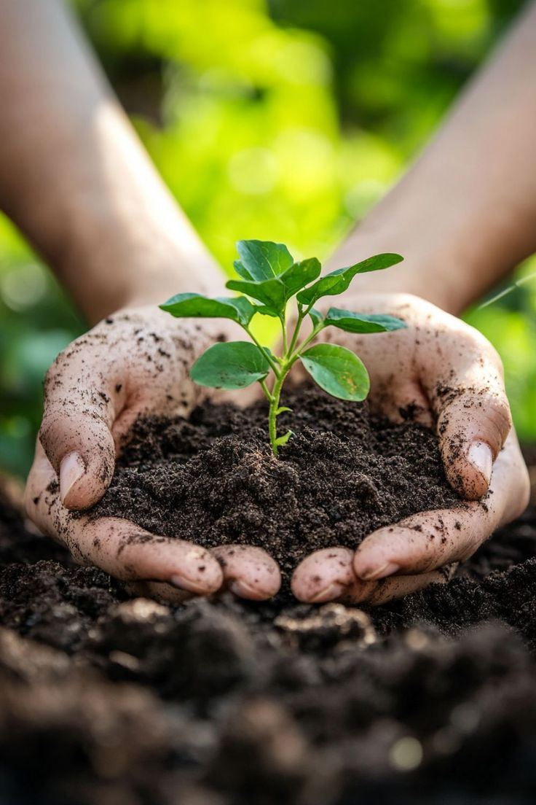

Freshness
We care about food that looks good, tastes right and reaches customers in useful condition.

Our farm
Our farm story is about careful growing, honest sourcing, clean handling and food that carries the warmth of home.

Vision statement
Yagazie Foods and Farms exists to connect what is grown with what people cook every day. The brand stands for progress, nourishment and practical service.
Core values
These values guide how products are grown, selected, packed and presented to customers.
We care about food that looks good, tastes right and reaches customers in useful condition.
We believe customers should know what they are buying, how it is packed and what it costs.
We value proper sorting, drying, storage and packaging from farm to kitchen.
We want growers, buyers, homes and food businesses to all benefit from the Yagazie chain.
Founder's story
Yagazie Foods and Farms started from the simple idea that good food should be easier to find, buy and trust. The founder saw how much families and vendors depend on reliable food supply, then shaped the brand around fresh produce, dried ingredients, seeds, seedlings and pantry staples.
The name Yagazie speaks of progress and good things moving forward. That is the spirit of the farm: to grow, package and supply products in a way that helps homes and businesses move forward too.
Brand philosophy
Our philosophy is simple: food is not just a product. It is care, culture, health, memory and business. That is why the brand combines farm produce with catalog-style clarity, so customers can see items, units and prices without confusion.